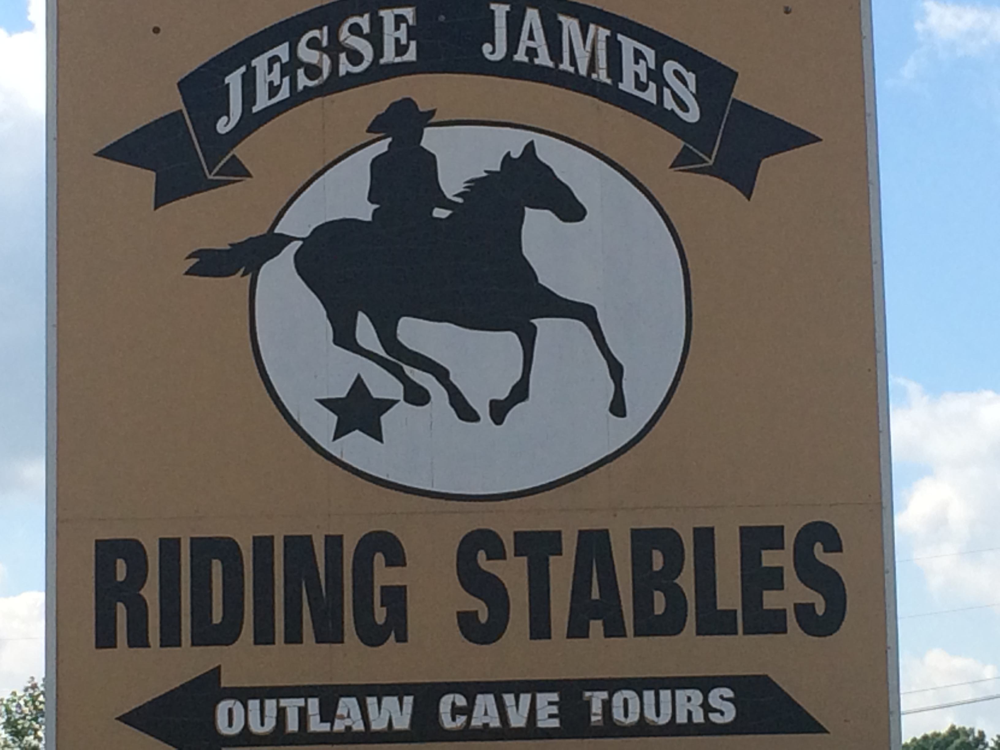

Maximus
By Mike
I'm sitting on top of a f***ing giant wild animal!, I thought, riding a horse named Maximus, the tallest horse at Jesse James Adventure Park. My head was about 12 feet above the rocky forest path, and all my trust was in an enourmous wild animal that had its own thoughts and desires. I was so aware of the fact that I didn't have control over Maximus the way I have control over a car. With the reins I could command him to stop, go, turn left or right, but really these commands were just suggestions; Max decided whether or not to listen. He kept stopping to eat the leaves, and he clearly became irritated after I pulled him away the first few times, so I had no choice but to let him eat and return to the trail when he was ready.
I just finished reading "The Alchemist," and riding that horse makes me think of the "language spoken by all things." Max and I communicated without words. It felt sort of like in the movie "Avatar" when they connect their hair braid to the animals to communicate to them without words, except the physical connection was the reigns and saddle; A slight lean or pull was clearly received. Taming a truly wild horse must feel pretty similar to the Avatar scene where they have to wrestle the wild dragons.
Riding Maximus was an exercise in trust and faith, and it left me feeling humbled and more connected with horses and animals in general.